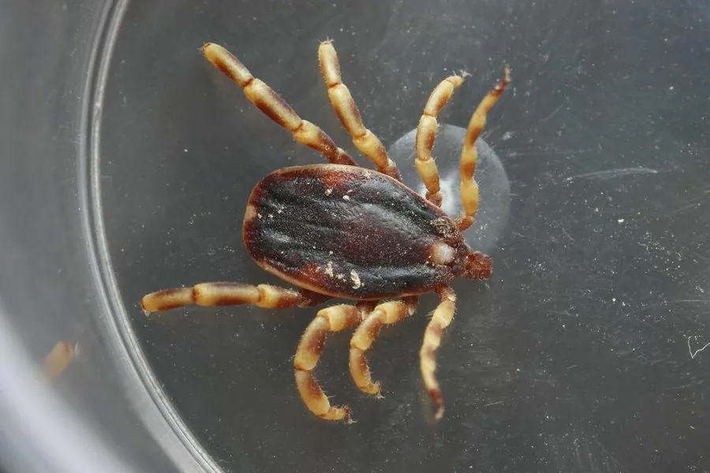

蛛形动物 · 动物界
亚洲璃眼蜱 Hyalomma asiaticum

分布于亚洲干旱地区的硬蜱，足上有浅色环带，吸血量大，可传播克里米亚-刚果出血热等疾病，是重要的蜱媒。
- 分类
- 门节肢动物门纲蛛形纲目蜱目科硬蜱科属璃眼蜱属
- 栖息环境
- 荒漠、半荒漠与草原，常在畜舍、圈舍和灌木丛中活动
- 地理分布
- 中国西北、中亚和西亚的干旱与半干旱地区
- 保护级别
- IUCN 暂无评估；中国未列入国家重点保护名录
物种志
亚洲璃眼蜱未吸血时体长 3–6 mm，雌蜱背部有盾板，足细长，各足关节附近常有浅色环带，外形较为硬朗；口器较长，吸血后身体可膨大到原来的数十倍。
它分布于中国西北、中亚和西亚的荒漠、半荒漠与草原，常寄生在骆驼、牛、羊等大型家畜身上，也会叮咬人。亚洲璃眼蜱耐干旱，常在畜舍、圈舍和灌木丛中活动，成蜱主动寻找宿主，生活史包括卵、幼蜱、若蜱和成蜱四个阶段，雌蜱产卵量可达数千粒。它是克里米亚-刚果出血热等疾病的重要传播媒介，叮咬后应尽快拔除并消毒，出现发热等症状要及时就医。目前 IUCN 暂无评估；中国未列入国家重点保护名录。
形态与习性
- 食性吸血，主要寄生骆驼、牛、羊等大型家畜
- 体长未吸血 3–6 mm，吸血后膨大数十倍
- 识别足细长，关节附近有浅色环带
- 生活史卵、幼蜱、若蜱、成蜱四阶段
- 危害传播克里米亚-刚果出血热等疾病
- 习性耐干旱，成蜱主动寻找宿主
趣味知识
- 亚洲璃眼蜱的足关节上有浅色环带，是辨认它的特征之一。
- 它非常耐旱，能在中国西北的荒漠和半荒漠中完成生活史。
- 被它叮咬后若出现发热、乏力，应尽快就医并告知医生蜱咬史。